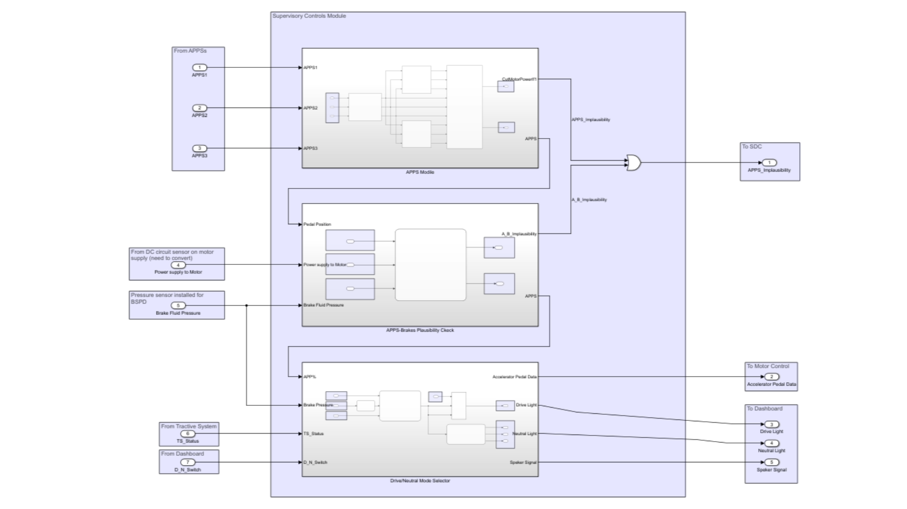

Implementation of Supervisory Control Systems
- Led a team of 6 members to design the supervisory control system of the first two iterations of the EV powertrain
- Implemented automatic sensor data plausibility checks on-board and sensor data flow through Simulink using CAN protocol
- Performed Failure Mode and Effect Analysis, Software Architecture and Algorithm Development
Link to github: https://github.com/ritesh27gole/SCS
